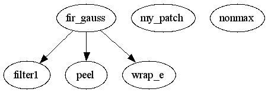

Master index
Index for PS_primal_sketch\filtering
Dependency Graph for PS_primal_sketch\filtering

Generated on Sun 30-Sep-2007 20:39:06 by
m2html
© 2003
 Master index
Master index Master index
Master index